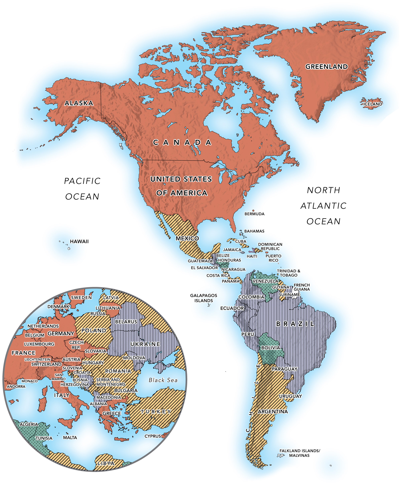

Globalization of Markets and the
Internationalization of the Firm
International Summer UniversityWU 2026 — Chapter 2
Dr. Arne Floh · Department of Global Trade, WU Vienna

International Summer UniversityWU 2026 — Chapter 2
Dr. Arne Floh · Department of Global Trade, WU Vienna

In-class opener · 10 minutes · think–pair–share
Objective: see globalization at work in a single product, and build the driving-forces → dimensions → consequences framework from real examples.
| Phase | Approximate period | Triggers | Key characteristics |
|---|---|---|---|
| First | 1830 to late 1800s (peak 1880) | Railroads and ocean transport | Rise of manufacturing; cross-border trade of commodities, largely by trading companies |
| Second | 1900 to 1930 | Electricity and steel production | Early MNEs (mainly Europe and North America) dominate manufacturing, extractive and agricultural industries |
| Third | 1948 to 1970s | GATT formed; end of WWII; Marshall Plan | Western focus on reducing trade barriers; rise of MNEs from Japan; global capital markets; global trade names |
| Fourth | 1980s to ~2006 | Privatization in transition economies; ICT and transport revolution; growth of emerging markets | Rapid growth in cross-border trade of products, services and capital; internationally active SMEs and services firms |
| Fifth | 2007 to present | Rise of digital and other new technologies | Technology facilitates trade and local production; rising digitally enabled services but slowing merchandise trade |
| Time period | Fastest transportation was via | At a speed of… |
|---|---|---|
| 1500 to 1840s | Human-powered ships and horse-drawn carriages | 10 mph |
| 1850 to 1900 | Steamships · steam locomotive trains | 36 mph · 65 mph |
| Early 1900s to today | Motor vehicles · propeller airplanes · jet aircraft | 75 · 300–400 · 500–700 mph |
Exhibit 2.2 — market globalization as a system: driving forces produce dimensions, which produce firm-level and societal consequences.
Driving forces
Falling trade & investment barriers · market liberalization · industrialization · integrated financial markets · technology
Dimensions
Integration of economies · regional blocs · global financial flows · converging lifestyles · globalized production & services
Firm-level consequences
New opportunities and rivals · more demanding, globally sourcing buyers · proactive internationalization of the value chain
Societal consequences
Contagion · loss of sovereignty · offshoring & job flight · effects on the poor, the environment and national culture
1. Research & development
Pfizer runs R&D in Singapore and Japan to access scientific talent.
2. Procurement (sourcing)
Steelcase sources low-cost parts from China and Mexico; Dell offshores back-office tasks to India.
3. Manufacturing
Genzyme makes and tests products in Germany, Switzerland and the UK; Renault builds cars in Eastern Europe.
4. Marketing
BMW and Honda place marketing subsidiaries in the US; Carrefour and Barclays build worldwide networks.
5. Distribution
Wolverine World Wide contracts with independent retail stores abroad to reach customers.
6. Sales & service
Amway and Avon use their own sales forces in China and Mexico; Toyota runs service operations abroad.
Trade, income, connectivity and industry data — redrawn in the WU palette

GDP and merchandise exports by region, 2021 (US$ bn). Redrawn from World Bank data (2023); trade grew broadly in step with GDP since 2011.

GNI per capita, Atlas method (current US$); darker = higher income. Source: World Bank (2023). 2024 GNI data now available.
Share of population using the internet, 2005–2022. Redrawn from ITU / Internet World Stats data. Worldwide ~75% (6.0 billion people) were online by 2025 (ITU).
Average annual real GDP growth, 2013–2022. Source: IMF, World Economic Outlook (2023). Emerging economies (India, China, Vietnam, Ethiopia) grew fastest; India now outpaces China.
Average daily income per capita, US$, inflation-adjusted, 1985–2022. Redrawn from World Bank / Brookings data. Extreme poverty keeps falling, though the 2030 target will be missed.
Share of US light-vehicle sales. 2002 from the textbook; 2024 approximate (Detroit’s Big Three keep losing share; Tesla and Hyundai–Kia gain). Chrysler is now part of Netherlands-based Stellantis; Tesla was founded in 2003.

Department of Global Trade
WU Vienna
Dr. Arne Floh
Senior Lecturer in International Marketing
Deputy Program Director MSc Export- and Internationalisation Management
Welthandelsplatz 1, 1020 Wien, Austria
www.wu.ac.at